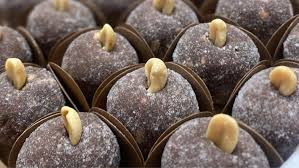

Cajuzinho

Description
Cajuzinho might trick you with its name. Despite translating to "little cashew", it
doesn't actually contain any cashews! Instead, it's made with a delicious combination
of condensed milk and peanuts.
Ingredients
- 1 pound of roasted unsalted peanuts, peeled
- 14 oz of sweetened condensed milk
- 1/3 cup of cocoa powder
- 1/2 cup sugar
Steps
- Set aside 50 peanuts for decorating.
- Add remaining peanuts in batches to a food processor and blend
into a fine powder. Be careful to not make peanut butter.
- Pour condensed milk, peanut powder and cocoa powder in a bowl. Stir into a paste.
- Let it rest for 30 minutes.
- Butter your hands and roll batter into balls.
- Shape them into little cashews.
- Roll them in the sugar and insert a piece of peanut on top to decorate.